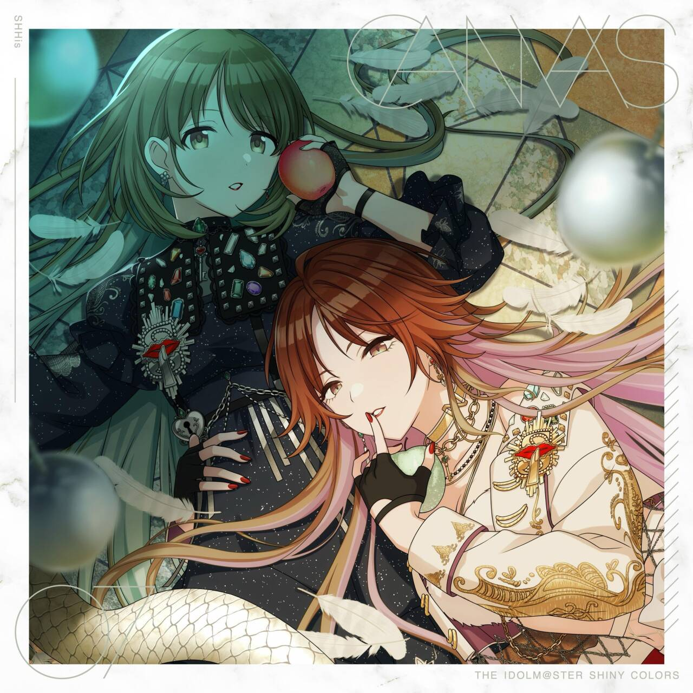

html
 
复制
 
 
下载
 
 
运行
 
<!DOCTYPE html>
<html lang="en">
<head>
    <meta charset="UTF-8">
    <meta name="viewport" content="width=device-width, initial-scale=1.0">
    <title>来听SHHis的这首小曲儿</title>
    <!-- 极简风格，只有必要的信息和一首歌 -->
    <style>
        /* 重置边距，让页面干净无干扰 */
        * {
            margin: 0;
            padding: 0;
            box-sizing: border-box;
        }

        body {
            background: linear-gradient(145deg, #f9f3e8 0%, #008e74 100%);
            min-height: 100vh;
            display: flex;
            align-items: center;
            justify-content: center;
            font-family: system-ui, -apple-system, 'Segoe UI', Roboto, 'Helvetica Neue', sans-serif;
            padding: 1.5rem;
            /* 柔和的心跳氛围 */
        }

        .card {
            max-width: 560px;
            width: 100%;
            background: rgba(255, 255, 255, 0.7);
            backdrop-filter: blur(10px);
            -webkit-backdrop-filter: blur(10px);
            border-radius: 36px;
            box-shadow: 0 20px 40px -12px rgba(0, 0, 0, 0.15), 
                        0 4px 18px rgba(0, 0, 0, 0.05),
                        inset 0 1px 2px rgba(255, 255, 255, 0.6);
            padding: 2.5rem 2rem 2.8rem 2rem;
            border: 1px solid rgba(255, 255, 255, 0.5);
            transition: all 0.2s ease;
        }

        /* 少量信息 —— 只有标题、短句和一个小小的装饰 */
        .greeting {
            font-size: 2.4rem;
            font-weight: 470;
            letter-spacing: -0.5px;
            color: #3d2a1b;
            line-height: 1.2;
            margin-bottom: 0.5rem;
            display: flex;
            align-items: center;
            gap: 10px;
        }

        .greeting span {
            background: #e6d5b8;
            padding: 0.2rem 0.9rem;
            border-radius: 60px;
            font-size: 1rem;
            font-weight: 400;
            color: #4e3a27;
            letter-spacing: 0.3px;
            border: 1px solid #cfbea2;
        }

        .verse {
            font-size: 1.3rem;
            color: #5f4c38;
            margin-bottom: 2rem;
            font-weight: 350;
            border-left: 4px solid #dbbc87;
            padding-left: 1.2rem;
            font-style: italic;
        }

        /* 一个小小的分隔，让信息更有层次 (也是信息的一部分) */
        .info-line {
            display: flex;
            gap: 1rem;
            flex-wrap: wrap;
            margin: 1.6rem 0 2.2rem 0;
            color: #7b5f44;
            font-size: 0.95rem;
        }

        .info-chip {
            background: #ede3d7;
            padding: 0.4rem 1.2rem;
            border-radius: 30px;
            display: inline-flex;
            align-items: center;
            gap: 0.4rem;
            border: 1px solid #dacbb9;
        }

        /* 歌曲播放器区块 — 只有一首歌，干净嵌入 */
        .song-section {
            margin-top: 1.8rem;
            background: rgba(250, 242, 232, 0.7);
            border-radius: 60px;
            padding: 1rem 1.6rem 1.4rem 1.6rem;
            border: 1px solid #ecd9c2;
        }

        .song-title {
            display: flex;
            align-items: center;
            gap: 0.5rem;
            font-size: 1.2rem;
            font-weight: 450;
            color: #3f2e1d;
            margin-bottom: 0.75rem;
        }

        .song-title:before {
            content: "🎵";
            font-size: 1.5rem;
            filter: drop-shadow(0 2px 2px rgba(172, 120, 50, 0.2));
        }

        /* 极简音频控制 —— 只显示必要的控件，不搞复杂 */
        audio {
            width: 100%;
            height: 44px;
            border-radius: 30px;
            outline: none;
            background-color: #f1e3d3;
        }

        /* 让 audio 控件适配柔和风格 (部分浏览器支持) */
        audio::-webkit-media-controls-panel {
            background-color: #efe0cf;
            border-radius: 30px;
        }

        /* 一个小小的音符装饰 — 纯粹好玩，不多余 */
        .tiny-note {
            margin-top: 0.9rem;
            font-size: 0.85rem;
            color: #b0977c;
            display: flex;
            justify-content: flex-end;
            align-items: center;
            gap: 6px;
        }

        .tiny-note:after {
            content: "♫ ♪ ♫";
            letter-spacing: 2px;
            opacity: 0.6;
            font-size: 1rem;
        }

        /* 响应式小调整 */
        @media (max-width: 430px) {
            .card { padding: 1.8rem 1.5rem; }
            .greeting { font-size: 2rem; }
            .verse { font-size: 1.1rem; }
        }
    </style>
</head>
<body>
    <div class="card">
        <!-- 少量信息 ① 简短的标题 + 一个小标记 -->
       <!-- 专辑封面图 -->
<div style="text-align: center; margin-bottom: 20px;">
    
</div>

        <!-- 少量信息 ② 一句喜欢的话（随意但舒服） -->
        <div class="verse">
         🌼<br> ............うん ——行こっか<br>み一ちやん，<br>🎹<br>歌とが.....<br>パフォーマンスで<br>みんなに感動を与えるような
アイドルになりたいな<br>.…そうなれるなら、死んだっていい。
        </div>

  

        <div class="song-section">
    <div class="song-title">
        SWEETEST BITE
    </div>
    
    <!-- audio 标签必须在这里面 -->
    <audio controls preload="metadata" loop>
        <!-- 只用一条 mp3 源，type 写对 -->
        <source src="02 SWEETEST BITE.mp3" type="audio/mpeg">
        您的浏览器不太支持 audio 标签呢。
    </audio>
    
    

        <!-- 信息已经足够少：只有标题、一句诗、两个标签、一首歌。没有多余内容。 -->
    </div>

    <!-- 额外的隐藏小彩蛋：保证只有一首歌且没有任何其他大段文字。 
         如果想更改歌曲，直接将上面两个<source>的src换成自己的歌曲链接即可。 
         目前两首均为免费钢琴曲(Blue Dot Sessions - Golden Pass / The Ones)，温柔舒缓，符合页面氛围。 -->
</body>
</html>
